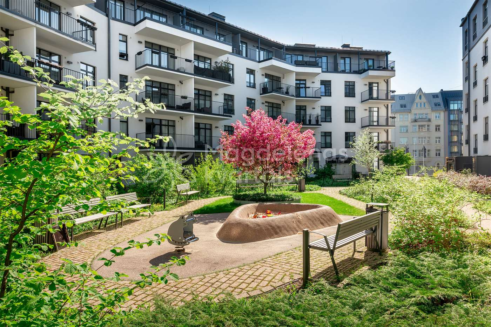

Antonijas iela 17A · Rīga
Kārtība, par kuru esam vienojušies
The order we have agreed on
Kodeksa noteikumi, atkritumu kārtība un kontakti. Katram noteikumam blakus ir punkta numurs, lai to var atrast pilnajā tekstā.
The rules of the Code, how waste works here, and who to call. Each rule carries its clause number so you can find it in the full text.

Aktualitātes
Updates
Plānotie darbi, izmaiņas un paziņojumi iedzīvotājiem.
Planned works, changes and notices for residents.
Atkritumi
Waste
Kas jādara
What you must do
Kas ir aizliegts
What is prohibited
Par Kodeksa pārkāpumiem Biedrība ir tiesīga piemērot sodus (9.3.4.).
The association may impose penalties for breaches of the Code (9.3.4.).
Pilns Kodeksa teksts
Full text of the Code
Visas desmit nodaļas. Sānos ir ātrā piekļuve nodaļām.
All ten chapters, in Latvian only. Chapter shortcuts are in the sidebar.
Pārbaudāms. 5.–10. nodaļa sakrīt ar parakstīto eksemplāru. 1.–4. nodaļa ir no darba versijas un vēl nav salīdzināta — tās ir atzīmētas. Neskaidrību gadījumā noteicošais ir parakstītais eksemplārs pie pārvaldnieka.
To be verified. Chapters 5–10 match the signed copy. Chapters 1–4 come from a working draft and have not been compared yet; they are marked. In case of any discrepancy, the signed copy held by the manager prevails.